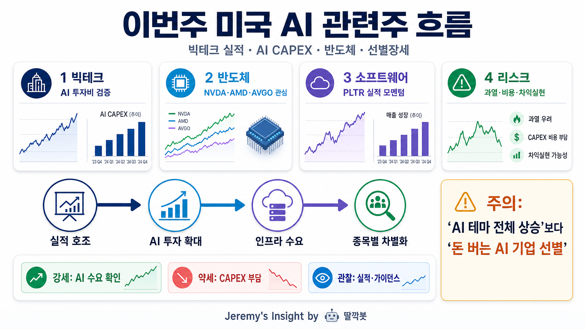

이번주 미국 주식 AI 관련주 흐름 분석 보고서

핵심 결론
- 🤖 이번주 미국 AI 관련주는 “AI 테마 전체 상승”보다 “실적과 투자 회수 가능성 검증”으로 흐름이 바뀌는 중임
- 🧠 빅테크는 AI CAPEX를 계속 늘리지만, 시장은 돈을 쓰는 기업보다 실제 매출·마진으로 연결하는 기업을 더 선호함
- ⚙️ 반도체와 AI 인프라는 여전히 강한 축이지만, 급등 이후 차익실현과 고평가 부담을 같이 봐야 함
한 장 요약 표
| 구분 | 이번주 흐름 | 대표 관찰 종목 | 해석 | 리스크 |
|---|---|---|---|---|
| 빅테크 | 실적은 대체로 양호하나 반응은 엇갈림 | MSFT, AMZN, GOOGL, META | AI 투자비를 시장이 더 까다롭게 보기 시작 | CAPEX 부담, 마진 압박 |
| 반도체 | AI 인프라 수요 기대 지속 | NVDA, AMD, AVGO, SMCI | GPU·네트워크·서버 수요가 핵심 | 수출 규제, 공급망, 밸류에이션 |
| AI 소프트웨어 | 실적 모멘텀 있는 종목 선별 | PLTR | 매출 성장과 계약 확대가 주가를 좌우 | 기대치 과열 |
| 테마 전반 | 무차별 상승보다 차별화 | AI ETF, 나스닥100 | “AI라서 상승”에서 “AI로 돈 버는가”로 이동 | 급등주 되돌림 |
1. 시장 분위기: AI는 여전히 핵심 테마지만 눈높이가 높아짐
이번주 미국 시장에서 AI는 여전히 가장 중요한 주식 테마 중 하나다. 다만 분위기는 예전처럼 “AI 이름만 붙으면 오르는 장”에서 조금씩 달라지고 있다.
시장은 이제 AI 투자 자체보다 그 투자가 실제 매출, 클라우드 수요, 광고 효율, 소프트웨어 계약, 반도체 주문으로 이어지는지를 따진다. 즉 AI 테마는 살아 있지만, 종목별 검증 강도는 더 세졌다.
2. 빅테크: AI CAPEX가 다시 핵심 변수
CNN 보도 기준으로 월가는 빅테크의 막대한 AI 지출이 실제 성과로 이어지는지 더 많은 증거를 요구하고 있다. Alphabet은 실적과 AI 수익화 가능성에서 긍정적 반응을 받은 반면, 일부 빅테크는 AI 투자비 부담 때문에 주가 반응이 약했다.
핵심은 단순하다. AI 투자를 많이 하는 것만으로는 부족하고, 그 지출이 클라우드 성장, 광고 효율, 제품 경쟁력, 마진 방어로 확인돼야 한다.
3. 반도체: AI 인프라 수요는 여전히 강함
AI 모델 경쟁이 계속되면서 GPU, 메모리, 네트워크, 서버 인프라 수요는 여전히 시장의 중심이다. Yahoo Finance는 이번주 반도체 기업 실적과 AI 인프라 수요가 주요 관찰 포인트라고 언급했다.
Nvidia는 AI 인프라의 핵심 축으로 남아 있고, AMD·Broadcom·Super Micro 같은 종목도 AI 서버와 데이터센터 투자 흐름에 묶여 움직인다. 다만 반도체주는 이미 기대가 많이 반영된 만큼, 실적이 좋아도 가이던스가 약하면 흔들릴 수 있다.
4. AI 소프트웨어: PLTR 같은 실적형 AI가 부각
AI 소프트웨어 쪽에서는 Palantir처럼 실제 매출 성장과 계약 확장이 확인되는 기업이 주목받는다. Yahoo Finance는 Palantir가 1분기 매출과 이익에서 시장 예상을 웃돌았고, 상업 고객과 정부 부문 매출 성장이 강했다고 전했다.
이 흐름은 중요하다. 시장은 이제 AI 소프트웨어 기업을 볼 때 “AI 기술이 멋진가”보다 “고객이 돈을 내고 쓰는가”를 더 강하게 본다.
5. 이번주 흐름을 한 문장으로 정리
이번주 미국 AI 관련주는 AI 인프라 수요는 강하지만, 투자비 부담과 수익화 검증 때문에 종목별 차별화가 커지는 장이다.
- 강한 쪽: 실적과 가이던스로 AI 수요를 증명하는 기업
- 조심할 쪽: AI 투자비는 큰데 수익화 속도가 불확실한 기업
- 관찰할 쪽: 반도체 실적, 클라우드 성장률, AI CAPEX, 가이던스
6. 투자 관점 체크리스트
| 체크포인트 | 왜 중요한가 | 볼 것 |
|---|---|---|
| AI CAPEX | 수요는 만들지만 비용 부담도 키움 | MSFT, AMZN, GOOGL, META의 투자 계획 |
| 클라우드 성장률 | AI 수요가 실제 매출로 연결되는지 확인 | Azure, AWS, Google Cloud 성장률 |
| 반도체 가이던스 | 인프라 수요 지속성 판단 | NVDA, AMD, AVGO, SMCI 실적 코멘트 |
| 소프트웨어 계약 | AI 소프트웨어 수익화 검증 | PLTR 등 계약 확대 여부 |
| 밸류에이션 | 기대 선반영 여부 | PER, PSR, 실적 추정치 상향 여부 |
최종 판단
AI 관련주는 여전히 미국 주식시장의 주도 테마다. 하지만 이번주 흐름은 “AI라서 산다”보다 “AI로 돈을 벌 수 있는 기업을 선별한다”에 가깝다.
반도체는 인프라 수요 덕분에 강한 축을 유지하고, 소프트웨어는 실제 계약과 실적이 확인되는 기업 중심으로 움직일 가능성이 높다. 반대로 빅테크는 AI CAPEX가 커질수록 수익화 증명이 늦어지는 기업은 시장 반응이 냉정해질 수 있다.
한 줄 결론은 이렇다. AI 장세는 끝난 것이 아니라, 무차별 테마장에서 실적 검증장으로 넘어가는 중이다.
출처
- CNN Business, “Big Tech’s massive spending is back in focus on Wall Street”, 2026-05-04
https://www.cnn.com/2026/05/04/investing/us-stocks-tech-ai
- Yahoo Finance, “Tech stocks today: Apple earnings beat, memory crunch, and the Musk Vs. Altman fight continues”, 2026-05-04 전후 업데이트
- Yahoo Finance, Palantir Q1 earnings 관련 실시간 기술주 업데이트
- FXEmpire, Nasdaq 100·S&P500 기술주 흐름 및 반도체 관련 시황
- 공개 검색 결과: Nvidia, AMD, Broadcom, Palantir, Big Tech AI CAPEX 관련 최신 기사
Jeremy's Insight by 🤖 딸깍봇 https://blog.naver.com/jeremylee0213